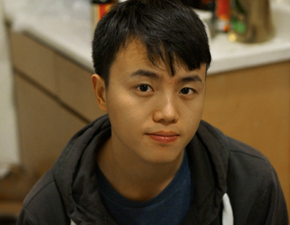

Qifan Pu
AMPLab, Soda Hall
I am a Ph.D. student in Computer Science.
I work at the AMPLab with Prof. Ion Stoica on distr..ibu.t..ed systems.
Previously, I received my bachelor from USTC in 2013. I've also interned at MSR-Asia (2011-2012), UW (2012-2013) and MSR (2014) in the past.

Publications
-
WiSee: Whole-Home Gesture Recognition Using Wireless Signals
Qifan Pu, Sidhant Gupta, Shyam Gollakota, Shwetak Patel
MobiCOM'13, Best Paper Award [pdf][web][media] -
LightSync: Unsynchronized Visual Communication over Screen-Camera Links
Wenjun Hu, Hao Gu, Qifan Pu
MobiCom'13, [pdf] -
Expressive Privacy Control with Pseudonyms
Seungyeop Han, Vincent Liu, Qifan Pu, Simon Peter, Thomas Anderson, Arvind Krishnamurthy, David Wetherall
SIGCOMM'13, [pdf][web] -
ParCast: Soft Video Delivery in MIMO-OFDM WLANs
Xiao Lin Liu, Wenjun Hu, Qifan Pu, Feng Wu, Yongguang Zhang
MobiCom'12, [pdf]